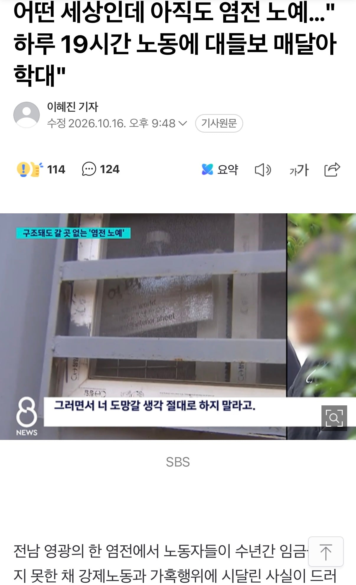

new!) 염전 노예 근황
댓글
참 영광스러울듯
영~~광
전남은 ㄹㅇ임
진심 저동네는 5년후 10년후 100년후에도 안없어질껄?
그냥 시골 특임 어느지역이고 다 노예 쓰다 걸림
최근에 전라도말고 있었나?
그냥 전라도만 유독 올라와서 궁금하네
신안에 질 수 없다
코를 팍팍 찌르는
아니 계속해서 저런 염전 노예들이 있는데 왜 해결을 안하는 거냐
꽁꽁 숨기면 찾을 방법이 없으니 박멸이 어렵다는건 이해할 수 있는데
뭐 중앙정부에서 엄중하게 해결하려는 노력이 없냐?
얼마전에 무슨 납 배출 주사 강제로 맞힌거는 중앙정부에서도 난리를 치던데
노예 사례가 나오는건 왜 이렇게 대처가 미온적이야 ㅅㅂ
민주주의의 성지 광주랑 같은 전남이라는게 참 재밌는듯 ㅋㅋ
그짝지역
우덜식 민주주의
그곳그지역
어쩔 수 없음... 공권력도 정부도 모두 눈감아주기로 한 상황인듯하니...
당연히 신안인줄알았는데 영광이네